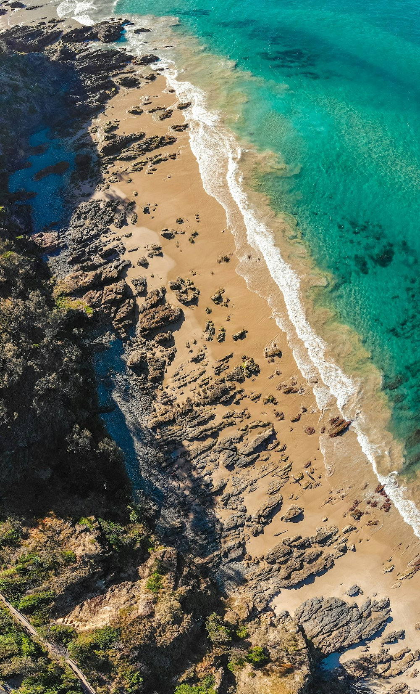

Climate Resilience and Disability: Building Inclusive Emergency Response
When disasters strike, the most vulnerable are often left behind. Here's how technology can ensure no one is forgotten in times of crisis.

"In the chaos of disaster, accessibility isn't a luxury-it's a lifeline."
The Intersection of Climate and Disability
Climate change is reshaping our world, bringing more frequent and severe weather events that test our emergency response systems. Yet in the rush to evacuate, shelter, and recover, one critical question often goes unasked: Are we leaving anyone behind?
The answer, unfortunately, is yes. People with disabilities-who make up 250 million of Africa's population-face disproportionate risks during climate disasters. From inaccessible evacuation routes to emergency shelters without basic accommodations, the very systems designed to save lives can become barriers to survival.
Climate Vulnerability Facts
- People with disabilities are 2-4 times more likely to die in disasters
- Only 20% of emergency shelters are fully accessible
- Climate refugees with disabilities face double discrimination
- Emergency communication systems often exclude deaf and blind communities
The African Context: Unique Challenges
Africa faces some of the world's most severe climate impacts, from devastating floods in Nigeria to prolonged droughts in the Horn of Africa. These challenges are compounded by limited infrastructure, resource constraints, and large rural populations that may be hours away from emergency services.
For people with disabilities in these contexts, climate disasters can be catastrophic. Traditional emergency response systems-designed for urban, well-resourced environments-often fail in rural African settings where most people with disabilities live.
The Compounding Effect
Climate change doesn't just create new challenges-it amplifies existing inequalities. When floods destroy accessible infrastructure, when droughts force migration from familiar environments, when extreme heat makes assistive devices unusable, the impact on people with disabilities is multiplied.
Technology as a Bridge to Safety
At Waide Mobility, we believe technology can be the bridge between vulnerability and safety. Our climate-resilient navigation systems are designed specifically for the challenges faced by African communities during disasters.
Offline-First Design
When disasters strike, communication networks often fail first. Our navigation systems work offline, storing critical evacuation routes and shelter information locally on devices. This ensures that even when cell towers are down, people can still find their way to safety.
Multi-Language Emergency Alerts
Africa's linguistic diversity means emergency information must be accessible in local languages. Our systems provide real-time alerts in over 20 African languages, with audio descriptions for visually impaired users and visual alerts for deaf communities.
Accessible Route Planning
Not all evacuation routes are created equal. Our AI identifies wheelchair-accessible paths, routes suitable for people with mobility aids, and alternatives for those who cannot navigate stairs or rough terrain.
Real-World Impact: The Lagos Flood Response
During the 2023 Lagos floods, our pilot program helped evacuate over 200 people with disabilities from affected areas. The offline navigation system continued working even when 70% of cell towers were down, guiding users to accessible emergency shelters.
"Without the audio directions, I would never have found the evacuation center," said Amina, a visually impaired resident. "The technology saved my life."
Building Resilient Communities
Technology alone isn't enough. Building truly resilient communities requires a comprehensive approach that addresses the root causes of vulnerability while leveraging innovation to create new solutions.
Community-Centered Design
Our development process starts with the communities we serve. We work directly with disability organizations, local leaders, and emergency responders to understand specific needs and cultural contexts. This ensures our solutions work in real-world conditions, not just in laboratory settings.
Capacity Building
We train local emergency responders on disability inclusion, provide technical support for community organizations, and create employment opportunities for people with disabilities in the climate resilience sector. This builds local capacity while ensuring sustainability.
Policy Advocacy
We work with governments across Africa to integrate disability considerations into climate adaptation plans. This includes advocating for accessible infrastructure standards, inclusive emergency protocols, and funding mechanisms that prioritize vulnerable populations.
The Path Forward: A Framework for Action
Creating climate-resilient communities that include everyone requires coordinated action across multiple sectors:
1. Inclusive Emergency Planning
Emergency plans must include people with disabilities from the design phase, not as an afterthought.
2. Accessible Infrastructure
Climate adaptation infrastructure must be accessible by design, from evacuation routes to emergency shelters.
3. Technology Integration
Climate-resilient technology should be offline-capable, multi-language, and designed for low-resource environments.
4. Community Empowerment
Local communities, especially disability organizations, must be central to planning and implementation.
Supporting SDG 13: Climate Action
Our work directly supports the United Nations Sustainable Development Goal 13 (Climate Action) by ensuring that climate adaptation efforts are inclusive and leave no one behind. We also contribute to SDG 10 (Reduced Inequalities) and SDG 3 (Good Health and Well-being) by addressing the intersection of climate vulnerability and disability.
This isn't just about compliance with international frameworks-it's about recognizing that climate resilience is only as strong as its most vulnerable link.
The Time to Act is Now
Climate disasters won't wait for us to build inclusive systems. Every day we delay, more lives are at risk.
Join Our Climate Resilience InitiativeWhat You Can Do
- Emergency Managers: Include disability organizations in your planning process and ensure all emergency protocols are accessible
- Technology Developers: Design for offline functionality and multi-sensory interfaces from the start
- Policymakers: Integrate disability considerations into all climate adaptation funding and planning
- Community Leaders: Advocate for inclusive emergency preparedness in your area
- Organizations: Partner with disability groups to strengthen your climate resilience efforts
Climate change affects us all, but it doesn't affect us all equally. By building inclusive resilience systems today, we can ensure that when the next disaster strikes, no one is left behind.
Ready to Build Climate-Resilient Communities?
Partner with Waide Mobility to create inclusive emergency response systems that protect everyone.
Get Started Today